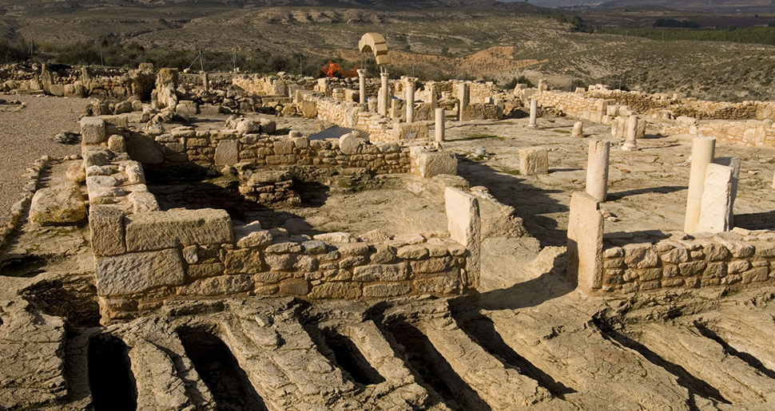
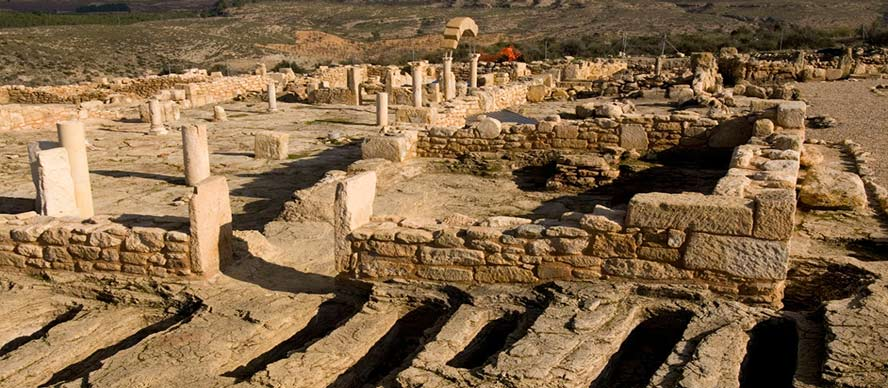
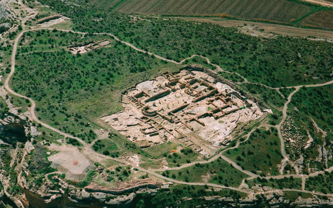
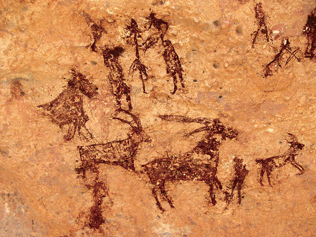

El Tolmo de Minateda
|  |
El Tolmo de Minateda es un yacimiento arqueológico excavado en 1988 por un grupo compuesto por la Universidad de Alicante y el Museo Arqueológico de Albacete.
En este yacimiento se han descubierto un total de 3 estructuras defensivas, siendo la más antigua de los siglos II-I A.C. y remodelada varias veces durante su historia.

Y como broche para las construcciones que aún hoy día nos dejan interpretar fácilmente la distribución que algún día tuviera, en el yacimiento del Tolmo también tenemos pinturas rupestres con má de 400 figuras dibujadas en ellas.
Una visita obligada estas pinturas declaradas Patrimonio de la Humanidad.
|
|
|